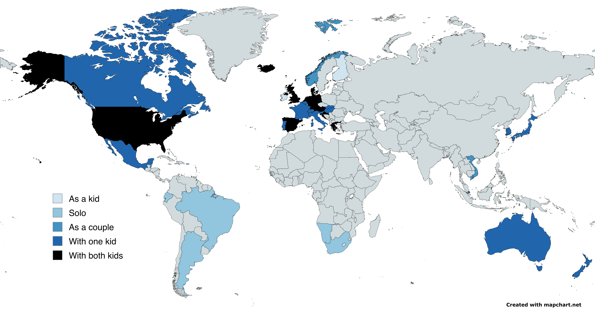

Interests
Parenting
I have kids, and I love getting to play with them and teach them new things. I'm always interested in learning how to do that better.
History
I love learning the history of things. I read a lot of history books, for example; one of my recent favorites was Empires of the Sky (by Alexander Rose), a history of manned flight told through the personae of Count Zeppelin and Juan Trippe (founder of Pan Am).
FIRE
I remember when I first heard about FIRE from a coworker of mine. The idea just clicked for me: if "money" is a thing you can have enough of, then just get enough of it and then you don't have to worry about it any more. I've read a few fun FIRE books (in my opinion, none of them are particularly well-written, but they get the point across); maybe the one I'd pick is Your Money or Your Life by Vicki Robin and Joe Dominguez, which I read when we were staying in an Airbnb somewhere.
Energy
The energy we use should come from the sun (duh). Why doesn't it? I've read a couple fun books about this as well; two that I'd recommend are Fossil Capital, by Andrews Malm (but skip the last two chapters about Marxist math) and Material World, by Ed Conway.
Exploration
Big or little, I love exploring. I'll read books about explorers (Endurance, by Alfred Lansing is a classic in this genre) but I also like taking flights and finding out what's around the corner.
Projects
Reading
Reading is a project to me. I've had a long-standing competition with my wife regarding who can read more books in a year and I've not lost yet. When I ask her if she's trying to win, she always says that she is, but I'm not sure... I think she just likes to read.
2026 (42 books so far)
Martyr! ★★★
A strange novel, unlike most other things I’ve read but maybe most similar to Infinite Jest and A Little Life; I liked those better than this. About Iran, AA and recovery, creating a world with your friends.
History of the world in bite-sized chunks ★★
A pretty good summary of “the history of civilization” that seems to want credit for including African and American history. Eventually I realized it was British and its view of history suddenly made sense (e.g., Charles Martel “saving” Europe from Islam, mentioning Scottish explorers of Africa, &c.).
Admiral Hornblower in the West Indies ★★★
A series of largely disconnected stories of Hornblower’s escapades in, yes, the West Indies. Overall, my review of the hornblower series is that they are marvelously fun, pretty historically and logistically accurate, and 100% British propaganda.
Lord Hornblower ★★★
A darker Hornblower book, as he deals with a mutiny and infidelity in the waning days of Napoleon’s rule.
Commodore Hornblower ★★★
Another good one, with some fun adventures in the Baltic around Napoleon’s invasion of Russia.
Flying Colours ★★★
The least interesting one so far, mostly because he has to spend so much time ON LAND. Gets much better once he hits the water.
Ship of the line ★★★
Another fun adventure with Captain Hornblower.
Hornblower during the crisis ★★★
A short, unfinished book that nevertheless succinctly sketches out the shape of a new adventure.
Beat to quarters ★★★
Another in the hornblower series.
Twelve yards ★★★
A very fun, trivial book about penalty taking. Good for soccer or statistics fans.
Semiosis ★★★★
A great sci-fi book, particularly after having read The Light Eaters. Sci-fi quality writing is my only complaint; the plot and characters are interesting and unpredictable.
Harry Potter and the deathly hallows ★★★★
The off-campus stuff drags a bit, but the complicating of the “bad” characters is well done. Overall, very British.
Harry Potter and the half-blood prince ★★★★
Blasted through this one as well, though the off-Hogwarts stuff feels a little expository and not as compelling.
Harry Potter and the order of the phoenix ★★★★
So great to rip through
Harry Potter and the goblet of fire ★★★★
Having read the first two and a half with E, I read this one on my own.
Grief is for people ★★★
A people-in-New-York-with-no-kids book, about a woman whose best friend commits suicide.
The light eaters ★★★★
An ode to plants and scientific paradigm changes. Interesting and deliberately hopeful.
Hornblower and the atropos ★★★
He keeps going, on a variety of ships - a canalboat (very apropos for our house in London), a funeral barge in the Thames, and his real ship in the Mediterranean.
Hornblower and the hotspur ★★★
The perpetually self-sacrificing Commander Hornblower continues his adventures, including his deeply ambivalent interactions with his wife and budding family, even finally achieving his long-hoped-for promotion to Post Captain.
Lieutenant hornblower ★★★
These books are quick and interesting reads that cover the exploits of our doughty hero but include color on the British navy at the time. Unapologetically biased in favor of the Brits.
Midshipman hornblower ★★★
A rollicking tale of life in HM Navy through the Horatio Alger-like tale of Horatio Hornblower.
White river crossing ★★★
A book, similar to “The adversary,” but set in the Hudson’s Bay territory and concerned with the Englishmen and Indians on both sides of the fur trade.
The shortest history of Europe ★★★
A, well, short history of Europe: Greco-Roman culture + Christianity + Germanic tribes = Europe. Well-argued and interesting.
Protecting the gift ★★★
A 1990s-era book about being safe as a parent and a kid; the author’s perspective is reasonable and relatively statistically accurate. Emphasis on trusting your instincts and taking care of yourself; also noted that being a teenage girl puts you at the highest risk of predation and so to avoid PC (privacy and control).
How can i help? ★★★
An unexpectedly enthralling set of questions-and-answers from an entomologist and tree scientist about rewilding backyards (plant oak and other native trees to support moth caterpillars).
An honest woman ★★
A memoir from an escort; some aspects of her story are interesting (like the way in which clients are similar to gambling app “whales”) but a lot seem inapplicable to “civilian” life.
Baudolino ★★
“Forrest Gump,” but from 14th century Italy. An at times interesting lens on history and the telling of history, but I could not wait to finish this book (and it took a long time to finish!).
V for vendetta (does not count) ★★★
A compelling, Watchmen-esque graphic novel about rebelling against a totalitarian British government.
In our time (too short to count) ★★★
A great set of Hemingway short stories. Unfortunately, too short to count towards my yearly books.
My promised land ★★★
A fantastic, interesting history of Israel’s people and politics, told by someone whose life has been spent explaining Israel to its citizens. My one qualm was that I didn’t (and don’t) buy the assumption that Israel has to remain a religious state to remain viable.
Strange empire ★★
An interesting story about an interesting place in an interesting time (the extension of Canada’s rule over the northwest; the end of the Indian / Metis civilizations), but I think it could have benefited from some judicious editing by someone who was less emotionally invested in Louis Riel.
Project Hail Mary ★★★
“Propulsive” is the right word for it… reads like a book for people who don’t read much. Making engineering and math exciting is a wonderful trick; the other writing (dialogue, description, “feeling true”) didn’t land for me.
Galatea (too short to count) ★★★
A quick feminist (?) read about Pygmalion’s statue coming to life and eventually escaping his clutches, metaphorically.
Flat earth ★★
A strange, bleak book. I think it’s supposed to be really out-there satire, but it read as too real to me and fell in the uncanny valley of comedy. This book, more than any other, seems like the book that I would write if I were good at writing and clever and witty and steeped in popular and internet culture.
Black like me ★★★
A great book, including the author’s afterword talking about how the civil rights movement changed after the assassination of MLK, Jr. The author goes undercover as a black man in the deep south and galvanizes the early civil rights movement.
Mercy street ★★★
A great read. An “intertwined lives” novel set in and around an abortion clinic in Boston that, to me, captures well-off liberal loneliness, mens-rights Christian nationalism, and the search for solace, belonging, and community.
The talented mr. ripley ★★
The story of a closeted sociopath who murders his acquaintance and is always on the verge of getting caught for it. I found it readable, but boring, cynical, and depressing.
Random family ★★★
Dizzying. I described it to Em as a book about people who just continually make the wrong decisions over and over again; it’s hard for me to see this book as something other than a set of stories to share with my children about what not to do. The world has changed in interesting ways since events in this book took place - violence and teen pregnancy are way down - but the underlying structure of poverty is the same.
Heart the lover ★★★★
Smart, readable (gulpable), won me over with a reference to Knut Hamsen’s Hunger. The story of two college students that fall in love.
A marriage at sea ★★★
A very tightly written account of a couple’s shipwreck at sea and subsequent survival on a life raft. Extends into their celebrity afterward, and the husband’s life alone after his “will to live” wife dies; this latter part struck me less.
Lucky Per ★★★
It’s long. It’s very Danish. It has a lot of historicalisms (describing a woman’s husband as her “master;” using “oriental” to describe a Jewish character’s propensities). It’s also very good, a complex, intellectual novel that does a decent job predicting the 20th century in Europe.
The art of spending money ★★
Another “self-help”/“personal finance” book that really hammers home how well I’m doing. This book’s straw man is people who spend money to impress other people.
The world beyond your head ★★★★
An argument for living in the real world and acquiring real skills and interacting with real people… it’s maybe dire that a book like this exists. An argument against, variously, the gambling industry, Immanuel Kant, big corporations, solipsism, polling, and having a representation trust between us and the real world.
Scatterlings ★★
An interesting setting, a biracial family in 1920s South Africa, but ultimately the story didn’t ring true to me and I didn’t connect with it.
John Adams ★★★
Long, and sympathetic; an interesting contrast to even the sympathetic portrait of Hamilton in the musical: Adams is a devoted husband and father, a longstanding patriot, and a long-suffering man of principles like prudence, forbearance, lack of partisanship.
Accidental tourist ★★★
A classic rom-com setup for a book that gets surprisingly intimate with the human condition. Still not a great book, but cozy.
2025 (38 books)
Die with zero ★★★
Another one of these not well written (or particularly well-thought-out) and yet compelling books… essentially YOLO, the book. I will make J read it and report back.
Russia 1917-1921, Revolution and Civil War ★★★
Long, but clarifying and not too dense to get through on successively nightly reads.
Nature girl ★★
Everyone has big boobs and lots of sex in this satiric (?) thriller (?) about the Everglades.
Hidden San Francisco ★★★★
Two or three stars for non-SF residents or people uninterested in anarchistic or social movements or infrastructure development. With with a decidedly pro-labor perspective, the book explores a lot of, well, hidden SF history.
High dive ★★★
Interesting, with some phrases and snippets that lodged in my mind, but overall not a too-interesting or well-written tale of an IRA hotel bombing in Brighton.
The princess bride ★★★
Just like the movie: heartfelt, exciting, funny, filled with a lot of funny inside baseball from the publishing and film worlds.
Winter’s bone ★★★
It’s the book for the JLaw movie; a taut, plot-driven holler thriller. Very evocative; it makes sense that they’d make a movie out of it.
War and peace ★★★
Definitely a masterpiece, though the second epilogue really dragged for me. I learned some about Napoleon’s campaign into Russia, and a bunch about Russian high society pre-Revolution.
1776 ★★★
I thought this would be a history of the American Revolution, but it really is just a history of the American Revolution in the year 1776. Easy to read, and pretty interesting.
Empires of the sky ★★★★
A very fun history of early flight, focusing on Zeppelins and their competition with Pan Am to create a worldwide airline.
Hells angels ★★★
Well-written, and casual in its depictions. This works well for the supposed depredations of the Angels and not so well for the misogyny and racism endemic in society.
An immense world ★★★
A fun exploration of the world through different animal senses. Had a perspective of wonder that I appreciated.
Last child in the woods ★★★
I personally did not think the book was particularly well-written or persuasive, but I already (wholeheartedly) agree with the thesis and am living my own version of it. It did have a few nice tips in it, but they were buried by all of the fluffy writing. For someone else, three stars.
The opposite of spoiled ★★★
Most of the book was irrelevant to me since we have our own rules about how to live and spend money, but the chapter on giving was interesting (it suggested involving kids in charitable donation decisions).
Abigail ★★★★
Like reading Harry potter for the first time; set in WWII Hungary with Nazis instead of Voldemort.
Electric kool-aid acid test ★★★
A compelling (if sometimes hard to read) account of Kesey & co’s trips (;)) and travels promoting LSD. Funnily anticlimactic.
Saltwater ★★★
Another memoir-ish novel (1st person, non-omniscient) about a girl growing up in Sunderland and moving to her grandfather’s house on the west coast of Ireland. This book would have really hit when I was 21.
The heart of the sea ★★★
A really wonderful book, almost four stars, about the Nantucket whaling ship The Essex that was sunk by a sperm whale and the travails of its crew. Has great detail about whaling and life on Nantucket at the time.
All day is a long time ★★★
A memoir-ish novel about being a drug addict Tampa kid that somehow ends as a redemption story. Booker Prize-ish, almost.
The cold millions ★★★
A fun-to-read piece of historical fiction about the early 20th century labor struggles in Spokane. Fast-paced, it endears you at least a little to the workingman’s plight.
Buddenbrooks ★★★★
The epic of a north German family’s decline, but a book about family, money, music, and prestige. Funny and sad, in parts, and long, but quite easy to read.
The song of Achilles ★★★
A beautiful, powerful book that was interesting, easy to read, and compelling, despite not being written super well. Achilles’s story, told through his lover Patroclus.
All my puny sorrows ★★★
A Thoreauvian experience: the world reduced down to what really matters; in this case, keeping her sister alive. Thoughtful and powerful.
How not to be a politician ★★★
Starts off great, ends up as a sort of failed Bulworth except that he stands for British Conservatism (tradition, decency, our place in the world, &c). Interesting notes on British governance!
Basque history of the world ★★★
Fun to read, and I learned a bit about Spanish history (which is more interesting to me than the Basques).
Ecology of fear ★★★★
Mike Davis does it again - another great book on the history of LA, in this case exploring the fears that have shaped Los Angeles’s geography and culture.
Abundance ★★
I think I’ve read too many Ezra Klein Times op-eds for this book to be new and interesting. My biggest takeaway was how degraded America’s environment was in the 50s and 60s, and how I don’t want to return to that.
Long Island compromise ★★★★
A fun read, and also a good momentum-builder for the next book. Grown up children reckon with their trauma from their father’s kidnapping from their Jewish community on Long Island. Very funny.
(doesn’t count) Fall through ★★★
Hard to follow the magical realism plot but the notes on community and music are heartfelt and evocative.
Arctic dreams ★★★★
A wonderful book; my favorite sections were about the animals and the explorers. It’s old enough (1981?) that it doesn’t mention global warming!
(doesn’t count) The bunk bed book ★★★
A cute package of design inspiration relating to bunk beds and shared rooms. The writing is pretty insipid, but the pictures are great.
The permaculture city ★★★
A great, inspiring little book that applies permaculture principles and techniques to life, well, not on a farm.
The beast you are ★★★
Fun and quick to read, this book is full of very deeply weird stories (in a good way!). Horror-adjacent.
Let us descend ★★
A magical-realist take on American slavery. An interesting idea, but I found it annoyingly inconsistent in its writing and it never really clicked with me.
How cycling can save the world ★★★
A fun and inspiring quick read arguing for, essentially, cycling infrastructure buildouts around Europe and North America.
The parrot and the igloo ★★★
A four-star cultural history of global warming that unfortunately dragged on too long (particularly in the third section). Fun and depressing to read.
The invention of miracles ★★
An interesting topic (Alexander Graham Bell and his lifelong interest in helping deaf people speak), but the inclusion of too much detail and not enough of a focused story made it drag.
Hunger ★★★
One of the “weird” books I’ve read, about a Romantic Swedish starving artist. I liked it a lot, and really identified with the main character (maybe I shouldn’t say that?).
Down and out in Paris and london ★★★
A sort of “no reservations” for the 1930s, combined with a hobo travelogue. Orwell’s classism comes through strongest in the passages in which he attempts to break away from it the most. A fun read.
Tomorrow and tomorrow and tomorrow ★★★
I was between two and three stars, but bumped it up to three because J loved it so much. I didn’t connect with it, maybe because the characters felt cartoonish or maybe because the “gaming” concept felt childish and lame.
2024 (43 books):
Termush ★★★
A spare, tense, Danish “thriller” about a pay-to-stay-alive resort after a nuclear holocaust. Observes (and by observing, satirizes) wealthy consumer culture’s lack of response to the issue at hand (and is therefore relevant to COVID, global warming, &c.).
Street smart ★★★
I quite liked this book, and if somebody was interested in transportation and urban planning and hadn’t read this yet, I would strongly recommend it.
The great terror, a reassessment ★★★★
As funny as it is to say about a book on Stalin’s purges, I looked forward to reading this every day. Very dense, and comprehensive, with a welcome perspective on the innocence or lack thereof of the system as a whole.
Hope ★★★
A Jonathan Franzen-esque, American Pastoral-esque book about a Brookline family. Fun and easy to read; thoughful and interesting.
The birth of pleasure ★★
It’s very cool to see my own family in a book! And the idea that children are transmuted into boys and young women by a patriarchal culture is an interesting one. Despite that, there’s a lot of extra stuff in this and only some of it was interesting.
Designing your life ★★★
Self-help-y, but at least they only said things that I think are correct. Helped me realize that I am already living my best life.
January ★★★
A feminist “The Stranger,” written sparely and conveying much more than what it says. About a young woman in rural Argentina in the early 20th century.
Red notice ★★★
A businessman get entrapped in Russian corruption and narrowly escapes - and it’s all true! Somewhat formulaic, but if you like the formula…
Demon copperhead ★★★
Too long! It must be an updating of Dickens’ David Copperfield, because it’s overstuffed with characters and plot.
The chocolate war ★★
A YA book about how the world will beat you down and how children are either simple or predators. Not super well written, but an interesting perspective.
The ends of the world ★★★★
An exemplary popular science book, covering the Ordovician, Devonian, Permian, Triassic, and Cretaceous extinctions.
A tale of two cities ★★★
As novels go, not the best: too serialized, to formulaic , very Victorian. Provides a great (British) sense of the French Revolution, however.
A visit from the goon squad ★★
A story about the passage of time and how it affected Gen X bad boys and girls. Some moments in it are indelible, but overall I didn’t connect with it.
The adversary ★★★★
A tale of small-town commercial warfare and sibling rivalry set in 18th(?) century Newfoundland. Three stars for normal readers that might struggle with the antique vocabularies.
Whale fall ★★★
Island life in a novel; the island in question is Welsh and the plot captivates less than the characters and the setting.
Material world ★★★★
A punchy survey of some of the world’s important materials, written by a journalist. Easy to read and interesting.
The alternative ★★
Reminiscent of “Tenacious Beasts” in that it’s a collection of chapters about things that exist but have no real common thread otherwise. I’m glad these ideas exist, and that he worked on collecting them, but this book was not compelling.
Remembering peasants ★★★★★★
(did not finish)A walking-speed tour through indigenous European history.
Headbirths ★★★
Short, with simple words combining into complicated ideas. An exploration of the late 70s baby bust in Germany (among many other things).
Superpower ★★★★
Breezily written and mostly accurate, this book tells the story of how a proposed power line from OK to TN wasn’t built without digging deeper intowhyit wasn’t.
Treacle walker ★★★
A short, strange book; a literary sci-fi kids story for grownups. A lot of British lingo that I think went over my heads. Quick to read.
Fossil capital ★★★★
A great, very interesting revisionist (Marxist) history of the initial development of steam power in 19th century Britain. Closed by two chapters of boring, unconvincing Marxist “math.”
Straight from the horse’s mouth ★★★
Quick to read; funny, surprising, and frustrating in equal measure. A prostitute in Casablanca tours us through Moroccan society.
Black ‘47 and beyond ★★
I was hoping that this would provide some narrative insight into the Irish potato famine, but it’s much more of an economist-type analysis.
Little eyes ★★★
A good premise (technology obfuscating surveillance, lonely, bored, and broken people trying to connect across the world) that gets a little maudlin in practice (kind of like the human-slaughterhouse book).
The end of Eden ★★★
A delightful romp through ancient history with an eccentric autodidact. Did you know a huge comet appeared in 1486 BC that induced people all over the world to abandon their pacifistic lifestyle and instead turn to murder and pillage?
Blood in the machine ★★★
A revisionist history of the Luddites, emphasizing not the breaking of the machines but the social pressures brought to bear on the entrepreneurs. Tries (too hard) to connect that history to today’s tech companies, but has a nice section on the present and recent history at the end.
Freeing energy ★★★
A breezy, inspiring manifesto for “local energy,” focusing on solar and batteries, from a software-turned-cleantech guy.
Building a better world in your backyard ★★★
Paul Wheaton’s “permaculture solutions” book. I blazed through this, reading it on my phone. It’s actually pretty good - short chapters and quick to read, so long as his voice isn’t to grating for you.
Open ★★★
Andre Agassi’s autobiography - a quick, punchy read that has a lot about tennis and a lot about being a prodigy, and then a post-prodigy.
Kilo ★★★
A fun, easy-to-read, well-reported, compelling journey along the path taken through Colombia by cocaine. Points the finger, correctly in my reading, at the tiny Colombian elite.
Man alone ★★★
A man’s “romance” novel, set in New Zealand during the Great Depression. Contains a great “lost in the woods hiking” section and a peculiar rough-and-ready hobo populism.
Fatal purity ★★★
A great history of Robespierre and the French Revolution more broadly. Explains the mix of idealism and pragmatism that led to the Terror.
Straphanger ★★★
A survey of public transit systems in selected American and European (and Japanese) cities, written by an enthusiast. Not as rigorous or thesis-driven as, say, paved paradise, but a fun whirl nonetheless.
Kitchen confidential ★★★
A very 90s classic, replete with swears, homophobic language, and stories of sexual exploits.
The inner gamer of tennis ★★★
Short, simple, businesslike. Some apt metaphors and imagery. Zen-inspired.
Flights ★★★
A wonderful book; an exploration of flying and movement and travelers whose lessons apply at least somewhat to me. A little too untidy to be four stars, but very close.
White gold ★★★
Engaging and quick-moving, if a little anglocentric, this history of European slaves in Morocco was okay, not great.
This love is not for cowards ★★★
A sort of reverse “miracle of castel di sangro” aimed at rebutting a lot of the late-2000s American discourse on Mexico. Two-star book at times.
No longer at ease ★★★
A coming-of-age story for both a young man and a country (Nigeria).
Carrie soto is back ★★★
A supreme BEACH READ that I blazed through, ignoring the funny Spanish and improbable tennis play-by-play.
Blood and ruins ★★★
Four stars for the chapters on imperialism, two stars for the middle chapters about the development of the warring states’ capacities.
Superpower ★★★
Three stars because I’m into that kind of stuff (energy transition planning, Australia); two stars for a general audience.
Conquistadores ★★★
A re-revisionist history of the conquistadores, emphasizing “obedezco pero no cumplo” but also explaining a lot of the context and the events.
2023 (55 books)
The second founding ★★★
A history of the creation of national citizenship in the USA during reconstruction, and its slow strangling by a business-focused Supreme Court and racist state governments.
The sixth extinction ★★★★
Like uninhabitable earth, a reckoning with human impacts, this time on animal life. Gets weaker at the end, but compelling and easy to read throughout.
The dragons, the giant, the women ★★★
A great memoir - a girl’s mom pays a rebel soldier to ferry her and her father and siblings out of Liberia - that didn’t land at some points for me.
Chip war ★★★
A pop business book, with 8-page-long chapters, that actually does a great job explaining the history of the semiconductor industry.
Invisible child ★★★
Long, but very readable and superlatively infuriating. A homeless family of eight tries to live in New York, and doesn’t quite make it.
Blood and ruins
made it to chapter 5, the section on radar.
The Devil’s teeth ★★★
fun local story about embedding with the shark researchers on the Farallones. Four stars for San Franciscans.
Uninhabitable earth ★★★★
A relentless accounting of the poverty a warming climate will engender. Particularly interesting are its reference to seeing the ruins of a richer, more peaceful world, and the short timeline during which much of the carbon in the was put there.
The heartbeat of wounded knee ★★★
Good but not great (to me). Persuasively demonstrates that Indian culture is not dead and that Indians are integral to American history, but I knew that already.
Year 1000 ★★
Dry and scattered, this book describes the world at 1000 sticking close to what evidence can support without adding a ton of narrative or color.
Paved paradise ★★★
This book offered a solid overview of parking in the US and had lots of fun facts and amusing anecdotes but didn’t feel super “tight” - jumping around in time and focusing for too long on fun stories.
Black rain ★★★★
Very interesting, emotionally heavy, and understated book about Hiroshima during and after the atomic bombing.
The wealthy barber ★★
Philosophicallysimpler and less compelling than YMoYL (while being much more jargon-heavy), it does make the point that by paying yourself first, you can save and invest painlessly. I found it in our Santa Barbara Airbnb.
Pineapple street ★★★★
A very apropos book about wealth, WASPs, marriage, family, and kids. Quick to read, I connected with the characters.
Under a white sky ★★★
Engaging and fun to read; relatively bleak on the prospects of humanity and civilization and there various ecosystems, but not overwhelmingly so.
Kleptopia ★★★
Not as easy to read or a fun as Moneyland, it nonetheless tells a compelling story about money laundering. Suffers from too many characters and a convoluted timeline.
The plot to save South Africa ★★★
An engaging, easy-to-read account of Chris Hani’s murder and the leadership it took to move SA away from the brink. Despite the dozens of characters, easy to follow.
When we cease to understand the world ★★★★
An interesting, wacky book about science and mathematics and death and insanity and the people who make the world much worse through their work.
Balkan ghosts ★★★
A very fun historical travelogue through the Balkans at an intense historical moment for the region. I learned a lot and had fun reading it.
The Beckham experiment ★★
Easy to read, quick and fun and timely (Messi joining Inter Miami) but a little repetitive and ultimately not all that insightful.
Tender is the night ★★
A fun “rich people problems” book from the 1920s ( I only made it about halfway through this one)
Poverty, by America ★★
I considered giving this book one star. I agree with it (in that poverty is a problem in America and that there are some obvious ways to solve it), but found it badly argued and badly written.
2666 ★★★
DFW-esque, but sprawling and international instead of solipsistic and internal. About reading, writing, violence, Mexico.
Black no more ★★★
A crazy, irreverent book from the 1930s (from a real American crank) that is essentially “the sneetches” if Dr. Seuss was a jaded pessimist. I read it in one day.
A blazing world ★★★
A fun, readable history book on a subject I knew nothing about (Oliver Cromwell) that gets sidetracked with irrelevant stories.
The new wilderness ★★
I didn’t really connect with this book; it’s a cool idea (post-wilderness world) but a little too mother-daughter for me.
Tenacious beasts ★★★
An easy, inspiring read about the (partial) recoveries of (certain) wild animals. Accurate and interesting, with some good perspective.
The book of disquiet ★★★
A long, dense description of melancholia, set in turn-of-the-century Lisbon ( I only made it to page 82 of ~300)
We ride upon sticks ★★★
I flew through this book - it was fun, another fun nostalgic book about experiences I never had (this time, girls’ high school sports).
Lord of all the dead ★★★
An exquisitely timed (walking pace) interrogation of the author’s uncle’s history in the Spanish Civil War.
The mill on the floss ★★★
Parts of this book are nearly perfect, Middlemarch-esque; other parts are harder for me to connect to.
The road to wigan pier ★★★
Prescient and interesting; a great picture of life in industrial England in 1937. I just don’t care enough about socialism for this to be four stars.
A stone is most precious where it belongs ★★★★
An edifying story of Uyghur oppression, exile, and political activism presented in a calm style by a professional journalist. This book connected with me.
Paddy clarke ha ha ha ★★★★
A slow build, this story hurt like A Little Life but with young Irish boys.
Tender is the flesh ★★★
Compelling. A humanizing, realist piece of “science fiction.” Is it about factory farming?
Golden gates ★★★
A great overview of the Bay Area’s housing problems; a little “inside baseball” with the SF YIMBY world.
Fraternity ★★★
These stories bring me “back” to college, with its rampant insecurity, hormonal excitement, and sense of self-discovery.
The mountain in the sea ★★★
Sci-fi: an okay story in a fantastic, thought-provoking setting (AI, octopuses, humanity). Unsettling but ultimately optimistic.
Osamu Tezuka’s 8-part manga about the life of Buddha ★★★
Thought-provoking and easy to read, it’s still a muddled story with too many characters (doesn’t count towards the list because it’s a manga)
Beheld ★★
Historical fiction about the pilgrims; insightful about the social and religious divides in Plymouth.
Four thousand weeks ★★★
I have been thinking about this book for days; a dogged take on “what really matters” despite not being particularly well written.
The lion house ★★★
Not as good as Tell Them of Battles, Kings, & Elephants or The Leopard; an interesting, evocative, and historically true account of the Ottoman Empire.
Moneyland ★★★
I really enjoyed this book and learned a lot. The author has a good sense of humor, appreciates the absurd, and contextualizes the stories well.
Why we sleep ★★
Repetitive and self-aggrandizing, it makes a good point (sleep is important!) that seems aimed at a markedly resistant audience.
Super Host ★★★
Better than I expected it to be; a light, quick, simple and simplistic beach read.
Dark money ★★★
A deeply researched excavation of right-wing political funding’s history and sources. Accurate and influential, though with a few cheap shots thrown in.
Mossflower ★★★
Better than Redwall - more adventures, a better plot, less choppily written - but with the same moral base.
Lords of finance ★★
An interesting-at-times account of the banking behind the Great Depression; overall too many details and thus reads too long.
The amber spyglass ★★★
Lots of fun - back to fun after The Subtle Knife - and touching, if lightly ideological.
Pirate enlightenment ★★
Less sprawling, and, ultimately, less interesting than Dawn of Everything, but with the same lens and theses. Sadly, not a fun pirate book.
Red pill ★★★
A clever, smart condensation of the terror a modern liberal cosmopolitan feels. The ending was a little pat, however.
The new map ★★
A beginner’s survey of “common knowledge” re: world energy production and consumption. Not written well, and constrained by the status quo.
The subtle knife ★★
Not as good as The golden compass - the side characters aren’t as developed and the settings not as enthralling
The memory monster ★★★
Intense to read, complicated, very Israeli.
The golden compass ★★★
Really a great book, formative for me in several dimensions. Looking forward to E reading it.
The wizard and the prophet ★★
An interesting topic, but a confused, muddled, and misleading take on the issues.
Redwall ★★
A book about kindness, friendship, and loyalty, where the heroes are good and the villains are bad. I’m excited to read it with E :)
A little life ★★★★
The first book that I’ve lost myself in in a while. Sad and painful to read but also wholesome and calming.
The world turned upside down ★★★★★
A long, dense description of the Cultural Revolution (I made it to chapter 18)
The permaculture handbook ★★★★
A Pattern Language on creating a permaculture farm in the suburbs
2022 (45 books)
The sum of us ★★★
makes good points; should have been more tightly edited (feels a bit loose as it goes on; cliches)
The stranger ★★★
quick read; unsettling; a bit Hemingwayesque but without the fun
The unsettlers ★★
inspiring stories of people going their own way farming in America; ends a bit flat
- The war of the poor ★★
interesting, compelling, a bit hit-or-miss. too short to count as a “real” book (~50pages)
Refugee ★★
very powerful; not very well written. Mbolela has seen a lot and his book brought a lot home for me
The leopard ★★★
a view into Italian unification and the minor European nobility (was written by one of them)
Tyll ★★★
builds a medieval world; twisting, plot-driven, interesting, and fun to read
The power of geography ★★
okay overview of Turkey, Greece, &c.; the last chapter is woefully naive and inaccurate in my view
Ministry for the future ★★★
compelling, persuasive, scary, accurate; characters and prose are somewhat clunky
White rage ★
full of infuriating tales; ultimately unpersuasive; the first two chapters are better than the later ones
Danger zone ★★
cogent analysis of the current US-China rivalry; easy to read and provides some okay context
Prisoners of geography ★★
similar to Zeihan’s books; not as good but a decent survey of the world
How beautiful we were ★★★
read like four different books all strung one after another
Red milk ★★★
short, easy, aggressively non-emotional (fictional) read about a tough subject: a young man’s life as a neo-nazi
Red famine ★★★
interesting, passionate, true, correct; mix of anecdote and analysis
Island dreams ★★★
quick, easy read; like The Old Ways: erudite, evocative, interesting but understated
The dawn of everything ★★★★
quite long; has lots of very interesting ideas
Overstory ★★★
slog, interesting at times, Mom might like it
The accidental superpower ★★★★
fun to read, interesting, makes some predictions that haven’t panned out
Evil Geniuses ★★
some good ideas, but overall a slog
Unstuck together ★★★
not super interesting or well-written but easy to read; very apropos
Siddhartha ★★★★
i would like to share this book with E when he’s a teenager
The end of the world (is just the beginning) ★★★★
fun to read
Britt-Marie was here ★
pretty much “A man called Ove” but with different characters
Clean ★★★
interesting
The great offshore grounds ★★
didn’t connect with the characters
Energy and civilization ★★
slog; lots of good facts; felt like a long defense of the status quo
Beautiful world, where are you ★★
another Sally Rooney book, less good than the other two; a little navel-gaze-y
The glorious cause ★★
slog; lots of fun scene-setting from the early days of the American Revolution
Finding the mother tree ★★
not super well-written; some very cool perspective on forests
How to change your mind ★★
very Michael Pollen-y book about psychedelics
The night watchman ★★
Numbers don't lie ★★★
How to be a family ★★
Sand talk ★★★
very interesting perspective; written conversationally
The anarchy ★★★
long, winding narrative history of EIC conquest in India
Cactus league ★★★
Money ★★★★
quick, fun read
Animalia ★★★★
slog; visceral depiction of French rural poverty and agricultural brutality
The red pony ★★★
great Steinbeck novella
Heaven and earth ★★
interesting setting, interesting characters and ideas
Everything like before ★★★★
very Norwegian short stories
Thin blue lie ★★
A patchy, uneven view on high-tech modern policing
A moveable feast ★★★★
Wonderful and inspiring
The street ★★
A somewhat gritty, somewhat wholesome story about black New York
Madridwalks ★★★
Travel
I love getting to see different parts of the world and imagine or even try out living there.
I also love exploring by bike. I do a lot of biking around town, but have also taken town-to-town bike trips through the Dolomites, across the South Island of New Zealand, and down the Danube into Vienna.

Writing
I've never been much of a writer; it's always been hard for me. I think part of it is worrying about being misunderstood, since the bandwidth of communication compared to talking with someone in person is so much more limited. That said, I love reading and so have always been interested in writing, so I'll occasionally give it a go here.
On making a website
Preamble: I'm not sure how much this has changed since the rise of "AI" website and app builders... to some extent, it's become much easier to use the efforts of previous designers and coders to "design" or "code" your website yourself using a linear regression engine. On the other hand, it's probably become much easier to overextend yourself and try to do more than you actually want to.
People often ask me about making websites. Instead of trying to remember and recollect my thoughts on that topic for each person that asks, I’ve decided to write down what I think in one place. What follows are some of the things I’ve learned over the past ten years of making websites for myself and others in my career as a freelancer, as part of a design studio, and as a software engineer.
First: design and inspiration.
Having your own ideas is great, but unless you’d describe yourself as a designer, I wouldn’t recommend designing your own website. Instead, look around at websites of people that do similar things to you, develop your taste by figuring out what you like and dislike about their websites, and use their existing designs as a template for your own website. This will make it much easier to come up with a website design that is coherent, and it will also make it much easier for you to communicate the specifics of the website you want to your web developer (or allow you to more easily build it yourself).
Second: website structure and hosting.
If you live in the modern world, or listen to podcasts, you’ve heard of Squarespace and Wix. That’s great. They serve a niche in website creation, but it’s probably smaller than what you might think. I classify ideas for websites by two things: how often they’ll be updated, and how they’ll be updated.
Class 1: websites that either will not be updated, or will be updated in simple ways (slightly changing copy, adding new entries of templated sections). For these websites, all it takes is building it once and it’s pretty much set. Any updates can be done by “going into the code” (gasp! It’s actually much simpler than you would think) and changing words or straightforwardly copying and pasting other bits. These websites can be hosted for free in several places (GitHub pages, Netlify, &c.) and the only ongoing cost of them is the domain name (~$9/yr).
Class 2: websites that will be updated in more complicated ways or by people who are uncomfortable with text and prefer to use GUIs (graphical user interfaces) or website builder wizards. These websites might have blog posts on them, where each blog post has its own semi-complicated format, or you might be regularly adding pages that are more “designed”. This is where Squarespace (or Wix, or Wordpress) can be more handy, as they all allow you to drag-and-drop images and text into a semi-custom layout. Of course, this handiness comes at a cost - these are either ~$10/mo (Squarespace, Wix) or free but require server hosting at ~$5/mo (Wordpress) - and they’re always trying to upsell you on themes or templates or plugins.
Class 3: websites that will be updated in response to user input. These are what people call “apps,” and they require a server and a database to store and process those user actions. This server can either be custom, written by software engineers that you are paying (Facebook is an “app,” for example, with thousands of software engineers constantly working on its design and functionality), or out-of-the-box (I’d classify Shopify as an “app,” where their software records and processes user interactions with your site). There are ways to do this for cheap, but in general building this class of website requires either a lot of money or a lot of expertise, or both.
Third: content.
Content is king. If you have interesting content, then show it off - write things that are interesting, display pictures that are cool, or showcase engaging video content. If you want the same people to visit your site over and over again (the way that people check Facebook, Reddit, Instagram, TikTok, Twitter, or Substack), then you’ll need to update it regularly. Getting yourself into a routine where you can regularly update your website's content will be important. If, however, you care more about rarer visits from different people, then you won't need to update your content quite so much.
Experience
Contact
anything (at) gagenewman (dot) com